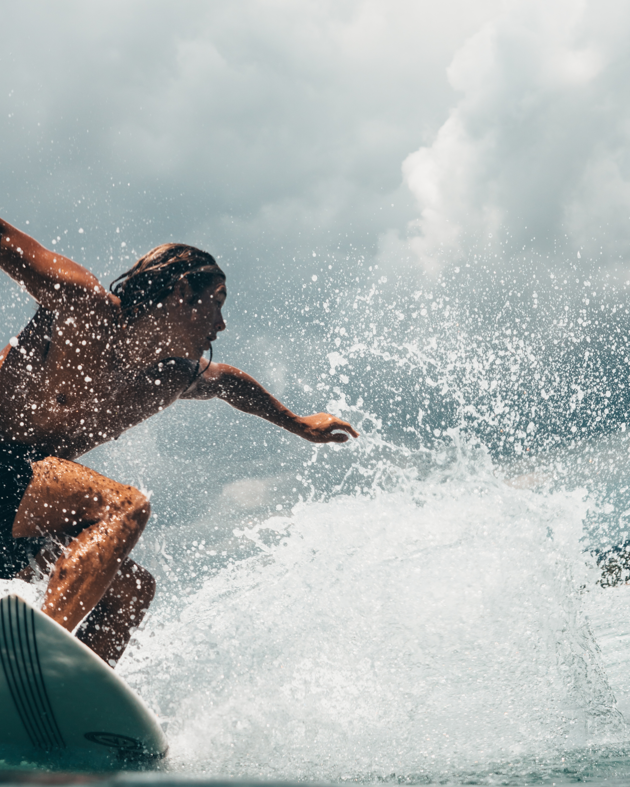
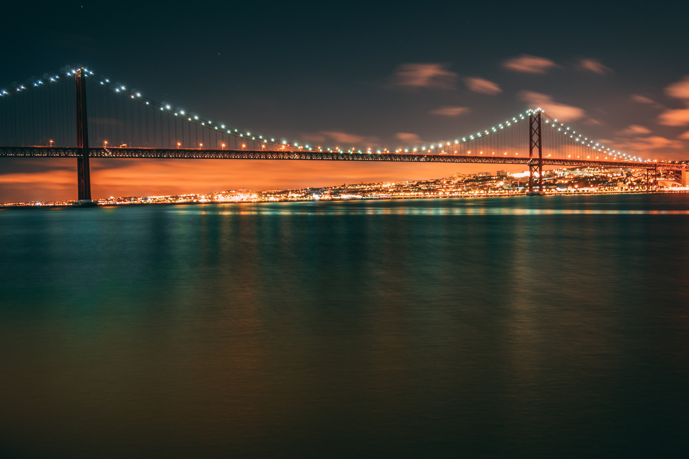

Olá Lisboa!
In October 2018, journey to Portugal to watch the world’s top professional surfing competition MEO Rip Curl Pro Portugal.
With participation by the world’s leading surfers, Rip Curl Pro Portugal - a competition included within the WSL - World Surf League Tour - will be held in Peniche and Cascais that at this time of year offer the best conditions for hosting surfing competitions.
The selected beaches are well known amongst surfers - Carcavelos, Guincho and in particular Supertubos - famous for its large, tubular-shaped waves.

See the seven hills of Lisbon!
São Jorge
São Vicente
São Roque
Santo André
Santa Catarina
Sant’Ana
Chagas
Let's go surfing!


Welcome to Lisbon!

Tram #28
The number 28 Lisbon tram connects Martim Moniz with Campo Ourique.

Golden Gate..?
No, Ponte 25 de Abril :)
Where to eat?
Um café, por favor!
Coffee drinking is a serious business in Portugal. There’s no way you can come here and not have to order a coffee at some point, so here is some essential information. These are general guidelines. No two cups of coffee will ever be identical no matter what words you use. Relax, it’s just a drink. The most popular coffee is an espresso. In Lisbon you would order um bica (oong beekuh) and in Porto um cimbalinho (oong simbalEENyo). Elsewhere um café (oong kaFEY). There are infinite variations on how it comes, so don’t be shy about being specific about your needs. Cheia (shayuh) is a full espresso cup, tres- quartas (tresh kwartas) 3/4 full, a ristretto is called um italiano (small, strong, the first few seconds of the machine’s coffee). You could ask for it não quente (nowng kent; not hot;) and they’ll put a dash of cold water in it for you.